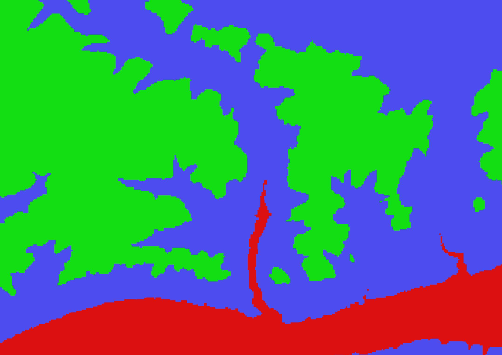
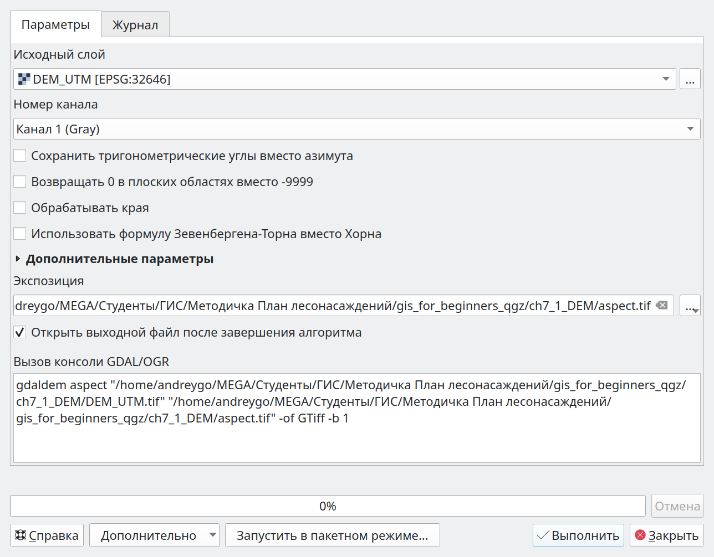
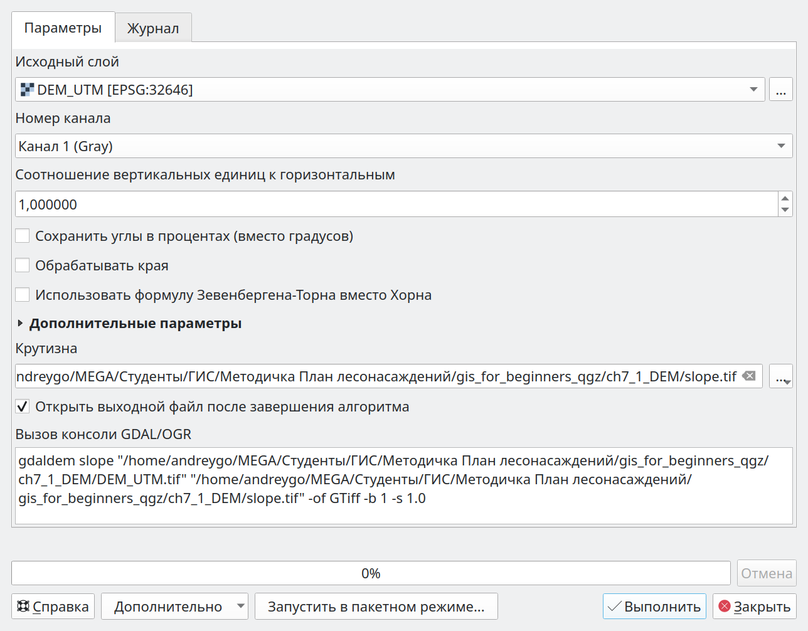
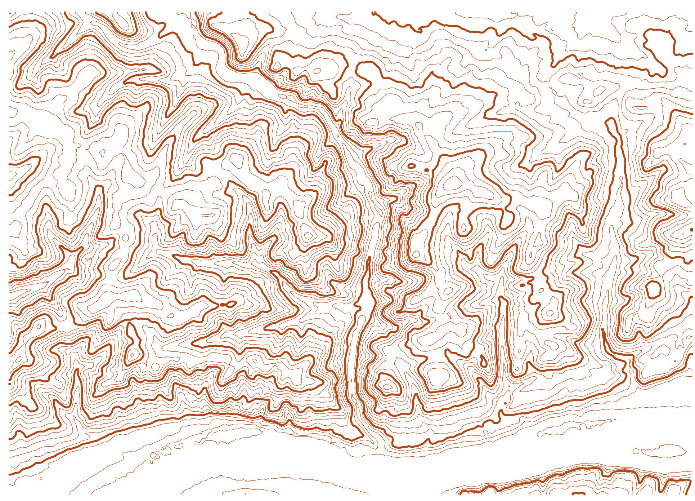

7 Цифровая модель рельефа
Цифровая модель рельефа это растр в каждой ячейке которого записана средняя высота поверхности земли. В этом разделе используется цифровая модель ASTER GDEM с пространственным разрешением 30 метров на пиксель.
7.1 Загрузка растровых данных.
Загрузка растровых данных производится через пункт “Слой” > “Добавить слой” > “Добавить растровый слой” или перетаскиванием файла растра в окно программы.
Создайте новый проект под названием “DEM”. Загрузите слои “videla.gpkg”, “uch_lesn.gpkg” и растр “DEM.tif”. Ссылка для скачивания данных: https://disk.yandex.ru/d/xbXVOp86ipOVgA
7.2 Визуализация
Настройки отображения растра устанавливаются в контекстном меню слоя “Свойства..” > “Стиль”. В пункте “Изображение” настраивается режим отображения. Для количественных данных используются режимы “Одноканальное серое” и “Одноканальное псевдоцветное”. Классифицированные изображения визуализируют при помощи режима “Палитра / Уникальные значения”. Для многоканальных растров используют режим “Многоканальное цветное”. Режимы “Теневой рельеф” и “Изолинии” применяются для цифровых моделей рельефа.
Для слоя “DEM” измените стиль отображения. По примеру выше примените режим “Одноканальное псевдоцветное”, задайте градиент “Magma” (Рисунок 7.1).
7.3 Классификация одноканального изображения
Инструмент “Растр” > “Калькулятор растров…” позволяет проводить арифметические операции с растровыми изображениями. Для составления выражения используются каналы растров и арифметические операторы. Калькулятор растров так же используется для классификации изображения т.е. разбиения его на классы. Для примера, воспользуемся инструментом и разобьем (классифицируем) растровый слой “DEM” на 2 класса. Первый класс будет иметь метку 0, в него войдут все пиксели с высотой до 250 метров, второй класс будет содержать пиксели с высотой большей или равной 250 метров и иметь метку 1.
Для такой классификации записывают выражение "DEM@1" >= 250 в “Калькуляторе растров”. Каждый пиксель изображения проверяется на соответсвтие условию. Пикселям, соответсвтующим условию, присваивается значение 1, не соответствующим - 0. Созданный растр будет содержать пиксели только с двумя значениями: 0 и 1 (до 250 и более 250 метров соответственно) (Рисунок 7.2).
По примеру выше проведите классификацию растра “DEM” на 2 класса.
Аналогичным образом возможно разбить растр на несколько классов. Для примера разобъем растр цифровой модели рельефа “DEM” на 3 класса. Класс 1 - значения от 0 до 200 м, класс 2 - от 200 до 400 м, класс 3 - от 400 до 600 м. Распределение по классам осуществляется при помощи инструмента “Калькулятор растров”.
Упомянутую классификацию можно осуществить с помощью следующего выражения: ("DEM@1" > 0 AND "DEM@1" < 200)*1 + ("DEM@1" >= 200 AND "DEM@1" < 400)*2 + ("DEM@1" >= 400 AND "DEM@1" < 600)*3. Для объяснения действия выражения, рассмотрим его по частям. Часть выражения ("DEM@1" > 0 AND "DEM@1" < 200) будет принимать значение 1 при высоте от 0 до 200 м (когда И одно И другое условие истинны). Во всех остальных случаях выражение будет принимать значение 0. Множитель рядом с выражением задает значение класса.
Классифицируйте раст “DEM” по 3 классам, как показано выше. К полученному изображению примените стиль отображения “Палитра / Уникальные значения”. Результат должен соответствовать изображению ниже (Рисунок 7.3).

7.4 Обрезка растра по границе векторного слоя
Часто требуется ограничить растровое изображение границами векторного слоя. Для выполнения этой операции возможно использовать два инструмента (они находятся во вкладке “Растр” > “Извлечение”): “Обрезать растр по охвату…” и “Обрезать растр по маске…”. Первый обрезает растр по границе наиманьшего прямоугольника, в который попадает геометрия, второй - по границе собственно геометрии (полигона).
При использовании инструмента “Обрезать растр по охвату…” в пункте “Исходный слой” задается растр, который необходимо обрезать. “Охват обрезки” задается двумя парами координат (левый нижний и правый верхний углы прямоугольника), которые можно заполнить вручную, “Рассчитать из слоя” (в этом случае необходимо выбрать слой), задать “Текущий охват карты” или “Указать на карте” напрямую (Рисунок 7.4).

В результате применения инструмента появится новый временный растровый слой “Кадрированый (по охвату)”. Для сохранения временного слоя на диск в контекстном меню выберите пункт “Экспорт” > “Сохранить как” формат “GeoTIFF”.
Обрежьте растр “DEM” по охвату слоя “videla”. Сохраните новый растр в папку проекта под названием “DEM_crop_extend”.
При использовании инструмента “Обрезать растр по маске…” в качестве “Исходного слоя” указывается растровое изображение, которое должно быть обрезано. В пункте “Слой маски” указывается векторный слой, по границам которого будет проведена обрезка. Чек-бокс “Только выделенные объекты” позволяет провести обрезку по границам выделенных объектов векторного слоя (Рисунок 7.5).

В результате применения инструмента появится новый временный растровый слоя “Кадрированный (по маске)”.
Обрежьте растр “DEM” по границе Караульного участкового лесничества (слой “uch_lesn”), используя инструмент “Обрезать растр по маске…”. Сохраните временный слой в папку проекта под названием “DEM_crop_mask”.
7.5 Зональная статистика
Зональная статистика предполагает разделение территории на несколько зон для каждой из которых извлекается значение из растрового слоя. Для выбора инструмента “Зональная статистика” активируйте “Панель инструментов”  , в пункте “Анализ растров” выберите “Зональная статистика”. В открывшемся окне пункт “Исходный слой” определяет векторный слой с зонами, в пункте “Растровый слой” задается растр из которого будут извлечены значения для каждой зоны. Пункт “Статистики для расчета” позволяет выбрать несколько статистик, которые будут добавлены в атрибутивную информацию для каждой зоны (среднее, медиана и т.д.).
, в пункте “Анализ растров” выберите “Зональная статистика”. В открывшемся окне пункт “Исходный слой” определяет векторный слой с зонами, в пункте “Растровый слой” задается растр из которого будут извлечены значения для каждой зоны. Пункт “Статистики для расчета” позволяет выбрать несколько статистик, которые будут добавлены в атрибутивную информацию для каждой зоны (среднее, медиана и т.д.).
Рассчитайте максимальную, минимальную и среднюю высоту для каждого выдела. В пункте “Исходный слой” указывается векторный слой выделов (“videla”), в пункте растровый слой - слой “DEM”, префикс поля ввода - “dem_”. В пункте “Статистики расчета” указываются: “Количество”; “Среднее”; “Минимум”; “Максимум”. После выполнения появится временный векторный слой “Зональная статистика” с рассчитанными показателями высоты для каждого выдела (поле “dem_count” - количество пикселей растрового слоя, попадающих в выдел; “dem_mean” - средняя высота для выдела; “dem_min” - минимальная высота для выдела; “dem_max” - максимальная высота для выдела) (Рисунок 7.6).
- Добавьте в слой выделов среднюю, максимальную и минимальную высоту над уровнем моря по примеру выше.
- Окрасьте выдела, которые имеют среднюю высоту более 400 м, в красный цвет (режим стиля - “Символизация на основе правил”)
- Создайте макет и сохраните изображение, которое должно соответствовать рисунку ниже (Рисунок 7.7).

7.6 Расчет топографических индексов.
Использующийся в этом разделе инструмент для расчета крутизны склона не корректно работает с растрами в географической системе координат (WGS84), поэтому для выполнения последующих заданий перепроецируйте цифровую модель рельефа в систему координат UTM (EPSG:32646 - WGS 84 / UTM zone 46N) и сохраните на диск под названием DEM_UTM. При выполнении последующих заданий используйте этот растр для расчета экспозиции и крутизны склона а так же TPI!
Для перепроецирования растра в другую систему координат используется инструмент “Растр” > “Проекции” > “Деформация (перепроецирование)…”. В качестве исходного слоя выбирается цифровая модель рельефа (слой “DEM”), в пункте “Целевая система координат” задается EPSG:32646 - WGS 84 / UTM zone 46N. В пункте “Перепроецировано” указывается папка для сохранения растрового слоя (папка проекта) и название “DEM_UTM.tif” (Рисунок 7.8).

Перепроецируйте растр “DEM” в систему коорданат EPSG:32646 - WGS 84 / UTM zone 46N. Сохраните растр на диск под названием “DEM_UTM.tif”.
На основе цифровой модели рельефа возможен расчет экспозиции и крутизны склона а так же топографических индексов TPI, TRI и др. Для примера рассчитаем экспозицию, крутизну и TPI.
Для расчета экспозиции склона перейдите в пункт “Растр” > “Анализ” > “Экспозиция…”. В качестве исходного слоя выберите цифровую модель рельефа (слой “DEM_UTM”). Новый растр возможно сохранить сразу на диск, а не в виде временного слоя, для этого в пункте “Экспозиция” выберите “Сохранить в файл…” и укажите директорию проекта и название файла “aspect.tif”. После применения инструмента в панеле слоев появится новый слой “aspect” в каждой ячейке которого будет указана экспозиция склона в виде азимута (угол, отсчитываемый от северного направления географического меридиана). Равнинные участки будут иметь значние -9999, если не отмечен чек-бокс “Возвращать 0 в плоских областях…” (Рисунок 7.9).

Рассчитайте экспозицию склона по примеру выше.
Для расчета крутизны склона на основе цифровой модели рельефа используется инструмент “Растр” > “Анализ” > “Крутизна…”. В качестве исходного слоя выбирается цифровая модель рельефа (слой “DEM_UTM”), результат выполнения сохраните на диск под названием “slope.tif”. В результате будет создан растровый слой, в каждой ячейке которого указана крутина склона в градусах (Рисунок 7.10).

Рассчитайте крутизну склона по примеру выше.
7.7 Создание многоканального изображения.
Несколько изображений с одинаковыми пространственным разрешением, охватом и системой координат возможно объединить в одно многоканальное изображение. Таким образом в каждом пикселе изображения будет содержаться несколько переменных в виде отдельных каналов (слоев). Такая практика часто используется в мультиспектральных изображениях, получаемых со спутников.
Для объединения нескольких изображений в одно многоканальное используется инструмент “Растр” > “Прочее” > “Результат объединения…”. В пункте “Исходные слои” отмечаются слои для объединения.
Последовательность отмеченны слоев в пункте “Исходные слои” будет соответствовать последовательности каналов в многоканальном изображении. Первый растр будет соответствовать каналу №1, второй растр - каналу № 2 и т.д.
Для создания многоканального изображения необходимо поставить чек-бокс в пункте “Поместить каждый входной слой в отдельный канал”, иначе склейка изображений произойдет в виде мозайки. “Выходной тип данных” должен соответствовать данным растровых изображений. Результатом применения инструмента станет многоканальный растровый слой “DEM_indexes” (Рисунок 7.11).
Объедините созданные в предыдущих заданиях растровые слои в многоканальное изображение: 1 канал - “aspect”; 2 канал - “slope”, 3 канал - “DEM_UTM” в многоканальное изображение. Сохраните полученное изображение в папку проекта под названием “DEM_indexes”.
7.8 Классификация многоканального изображения
Созданный многоканальный растр “DEM_indexes” позволяет провдить фильтрацию сразу по нескольким каналам (переменным). Для этого используется “Растр” > “Калькулятор растров” который уже применялся для классификации растра “DEM” в предыдущем разделе (Глава 7.3). В пункте “Каналы растра” отображаются растровые слои проекта в виде названия и номера канала отделенных символом “@”, которые возможно использовать в вырежении для классификации по нескольким каналам. Например, для выделения участков земли на высоте более 300 м и крутизной более 30 градусов используется выражение: "DEM_indexes@2">30 AND "DEM_indexes@3">300 (2 канал - “slope”, 3 канал - “DEM_UTM”). Аналогично задается условие для выбороа участков на высоте от 200 до 300 метров с уклоном менее 20 градусов: "DEM_indexes@2"< 20 AND "DEM_indexes@3" > 200 AND "DEM_indexes@3" < 300 (Рисунок 7.12).

Используя многоканальный растр “DEM_indexes”, выделите участки с южной экспозицией склона (от 135 до 225 градусов) находящиеся на высоте до 300 метров. Сохраните новый растровый слой под названием “DEM_classification.tif”. Результат выполнения задания представлен на рисунке ниже (Рисунок 7.13).

7.9 Создание изолиний
Инструмент “Растр” > “Извлечение” > “Создать изолинии..** используется для построения изолиний (горизонталей). В пункте”Исходный слой” указывается цифровая модель рельефа, пункт ”Расстояние между изолиниями”** определяет высоту сечения рельефа в метрах. Результатом применения инструмента является временный векторный слой горизонталей с атрибутом “ELEV” в котором указана высота каждой конкретной горизонтали (Рисунок 7.14).

Создайте слой горизонталей с высотой сечения рельефа 20 метров, по примеру выше. Сохраните полученный векторный слой на диск под названием “Изолинии”.
7.10 Оформление изолиний
!!Задание, создать макет с оформленными подписями горизонталей.
Для оформления изолиний применяются режимы “Символизация на основе правил” и “Подписи на основе правил” (вкладки “Стиль” и “Надписи” контекстного меню слоя). Символизация должна соответствовать следующим условиям: - горизонтали оформляются линиями коричневого цвета; - горизонтали, отметки которых кратны 100 (каждая пятая горизонталь), оформляются утолщенной линией. Для второго условия применяется оператор % который возвращает остаток от деления. Для горизонталей, отметка которых кратна 100 метров, выражение "ELEV" % 100 будет возвращать значение 0 (“ELEV” - поле в слое “Горизонтали” которое содержит отметку для каждой горизонтали) (Рисунок 7.15).

Настройте стиль слоя “Горизонтали” так, что бы горизонтали с отметками кратными 100 имели толщину линий 0.4, а все остальные горизонтали толщину 0.1. Цвет горизонталей коричневый. Для этого перейдите в контекстрое меню слоя “Стиль” > режим “Символизация на основе правил” (Рисунок 7.16).

Подписываются горизонтали кратные 50. В этом случае используюется режим “Подписи на основе правил” а так же выражение "ELEV" % 100 = 0 по аналогии с предыдущим заданием. Для подписей так же настраивается “Размещение” подписей. “Режим” - параллельно, “Разрешенные позиции” - на линии. “Повтор подписей”: “Интервал” - 10 000, “метры в масштабе” (Рисунок 7.17).

Добавьте подписи для горизонталей, отметки которых кратны 100. Для этого перейдите в контекстное меню слоя (“Стиль” > “Надписи” > режим “Подписи на основе правил”) и настройте подписи (Рисунок 7.18).